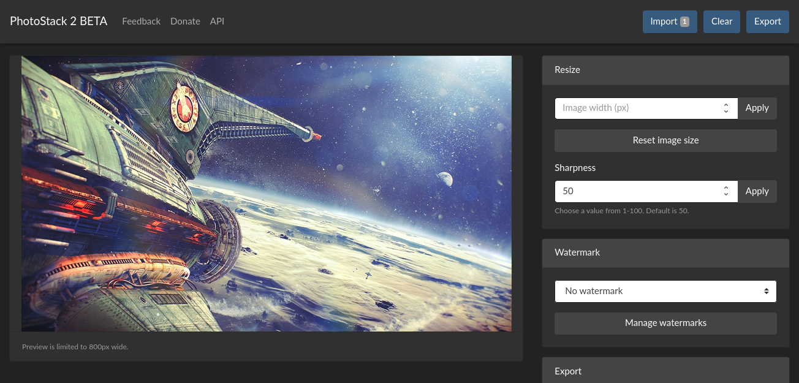
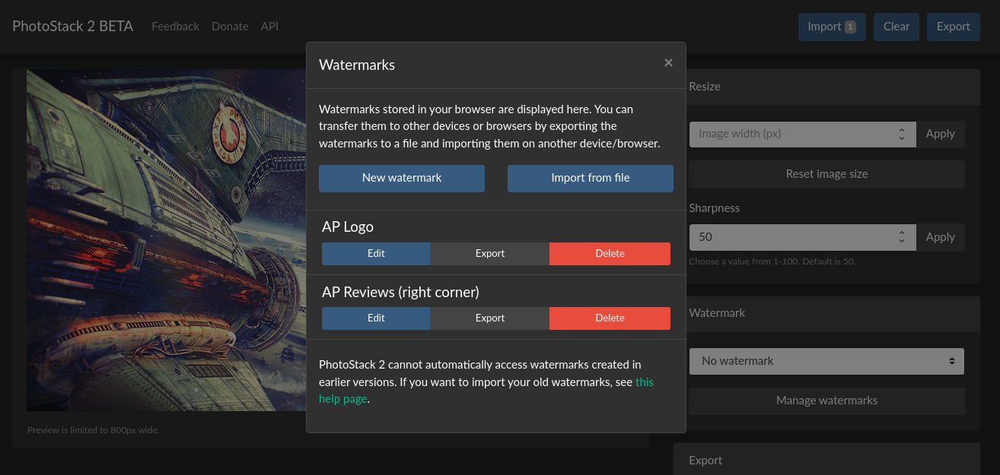

I finished the first version of PhotoStack back in May 2019, after a few months of development. It’s a batch photo editor, with the ability to make changes to many images at once - including adding a watermark, changing the file name and image format, removing EXIF data, and more.
PhotoStack has received several updates since then, but now there’s a major upgrade: PhotoStack 2. It’s now available at edit.photostack.app as a beta. The existing version will stay live at photostack.app until V2 is complete.

PhotoStack 2 may look very similar to the existing version, but it has been significantly re-written to take better advantage of newer browser features like JavaScript Promises. It’s now a single-page web app, so switching between pages won’t flash the screen.
The main improvement to the editor is that images are now resized using Pica.js, which means photos scaled down in size will no longer appear heavily pixelated. There’s also a new sharpness setting for the resize function.
The watermark editor has also been significantly overhauled. Clicking the ‘Manage watermarks’ button in the main editor now opens a popup containing a list of all saved watermarks - along with edit, delete, and export buttons for each. Also, you can now import multiple watermark files at once.

Some of the other changes in PhotoStack 2: you now get a progress bar instead of a spinner on the export screen, opening the print dialog (CTRL+P on desktops) will now let you print a preview image, and the new ‘Clear’ button will clear your imported images.
Due to browser limitations, PhotoStack 2 can’t automatically access watermarks created in the original PhotoStack. You can download old watermarks and re-import them using the instructions here.
I don’t anticipate PhotoStack 2 being in beta for very long: I just need to do more cross-browser testing and update the Android app to point to the new URL. Give it a try and let me know what you think!